The National Institute of Mental Health (NIMH) is part of the National Institutes of Health (NIH), a component of the U.S. Department of Health and Human Services.
HC-05 is a Bluetooth module that can be purchased from Amazon or many other places. It can be paired with the Bluetooth radio on a PC (laptop, tablet, etc.) and, once paired, can communicate with the PC as a serial port.
HC-05 can be a slave or master device, but we will use it as a slave. There is another type of Bluetooth module, HC-06, which can be a slave only. Although HC-06 is a little cheaper, HC-05 is easier to configure with a mode switch button.
First, connect the HC-05 module with Arduino as in the following diagrams.
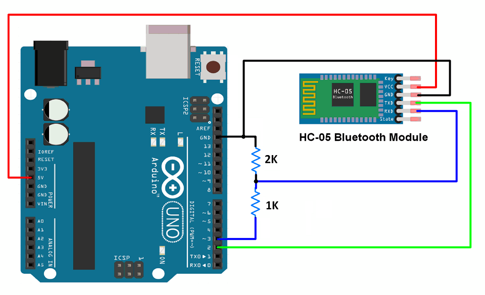
| Arduino | HC-05 |
| 5V | VCC |
| GND | GND |
| Pin 2 (will be RX for software serial) | TX |
| Pin 3 (will be TX for software serial) | RX (via a voltage divider) |
Note that there is a voltage divider composed of 1kΩ & 2kΩ resistors between Arduino TX (transmitter) and HC-05 RX (receiver) lines. While Arduino is powered by 5V, HC-05 runs on 3.3V. HC-05 has a voltage regulator for VCC, so it can be powered with 5V without damage. However, the logic gate level of HC-05 is 3.3V. If it communicates with 5 volt signals from the Arduino for a prolonged time, the module may be damaged. Therefore, the resistors are added to reduce the voltage output of Arduino.
Now connect the Uno to the PC using the USB cable and move to next step.
Arduino and HC-05 talk to each other through serial communication, but Uno has only one serial (USB-to-Serial) port, which it already uses to communicate with the PC. So we will use SoftwareSerial (pin 2 as RX and pin 3 as TX) for the communication between Arduino and HC-05 while setting up the HC-05 module and switch back to the hardware serial later when deploying them.
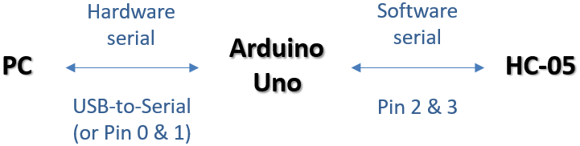
To test if the circuit is working correctly, we will use the "01_Test" sketch, which is in the Arduino_sketch_for_Bluetooth.zip file.
This sketch requires the HC-05 module to start in the AT command mode. Disconnect the VCC (power) line from the HC-05 and reconnect it while holding down the button on the module. The HC-05 LED should blink on and off at about 2 second intervals. Otherwise, try again. Once it begins to blink slowly, release the button.
Upload the sketch and open the serial monitor in the Arduino IDE (CTRL+SHIFT+M). Change the serial monitor options to "Both NL & CR" & "9600 baud".
Type "AT" and send. If "OK" returns, it means that the circuit is working fine.
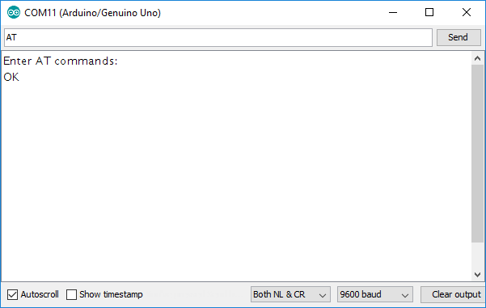
Close the serial monitor and move to the next step.
If "Enter AT commands:" is not displayed when the serial monitor is opened, check the manufacturer's documentation for the default baud rate of the HC-05 module. Most default to 38400 in the AT command mode. If not the case, change the value of "softserial_baudrate" in the sketch to match the HC-05 default baud rate and upload again. The message will also not display if the serial monitor's options are not set to "Both NL & CR" & "9600 baud".
The "02_Init" sketch (from Arduino_sketch_for_Bluetooth.zip) is used to change the name of the HC-05 module, the passcode and the default serial communication parameters.
This sketch also needs the HC-05 to start in the AT command mode, so hold down the button and restart the module, if it is not in the AT command mode already.
Before uploading the sketch, select a name and passcode and change them in the "02_Init" sketch code. By default, the name is "RewardDevice001" and the passcode is "1234". They are assigned to the variables, hc05_name & hc05_password, respectively.
Upload the sketch, open the serial monitor and wait for the "Setup complete!!!" message (see the figure below). The "Name" field in the previous settings may be blank (retrieving the previous name requires holding down the button while the sketch is executed), but that is okay.
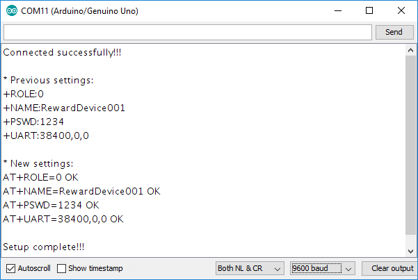
Close the serial monitor and move to Step 4.
If there is an error while uploading this sketch, see if the serial monitor was left open in the other sketch windows. Close all of them before trying this step again.
First, make it sure that no wire is connected to Arduino pin 0 & 1. Otherwise, sketch uploading will fail.
Upload the "03_Setup" sketch (from Arduino_sketch_for_Bluetooth.zip). If the baud rate of HC-05 was changed during Step 3, change the value in this sketch as well before uploading.
SoftwareSerial was used for testing and initializing the HC-05 module, but hardware serial will be used to communicate for reward delivery. Thus, after uploading this sketch, move RX from pin 2 to pin 0 and TX from pin 3 to pin 1. (Note, the Uno cannot be connected to a computer without removing the wires from pins 0 and 1.)
To get started with reward delivery, pair the HC-05 module with the ML PC. For this, the module must be in the communication mode. Disconnect the VCC from the HC-05 and reconnect without pushing the button on the HC-05. The LED should be blinking quickly about 5 times per second. Right-click on the Bluetooth icon on the tray of your PC and choose "Show Bluetooth Devices".
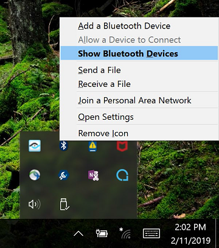
In the "Bluetooth & other devices" window below, 1) click "Add Bluetooth or other device" and 2) then click "Bluetooth" in the resulting dialog ("Add a device"). When the name of the HC-05 module ("RewardDevice001") shows up, click on it and enter the PIN (it is "1234", if not changed in Step 3). The LED should be blinking shortly once about every 2 seconds now.
After the pairing is complete, close the "Add a device" window and 3) open "Device and printers". Then 4) right-click on the reward device and choose the "Properties" menu.
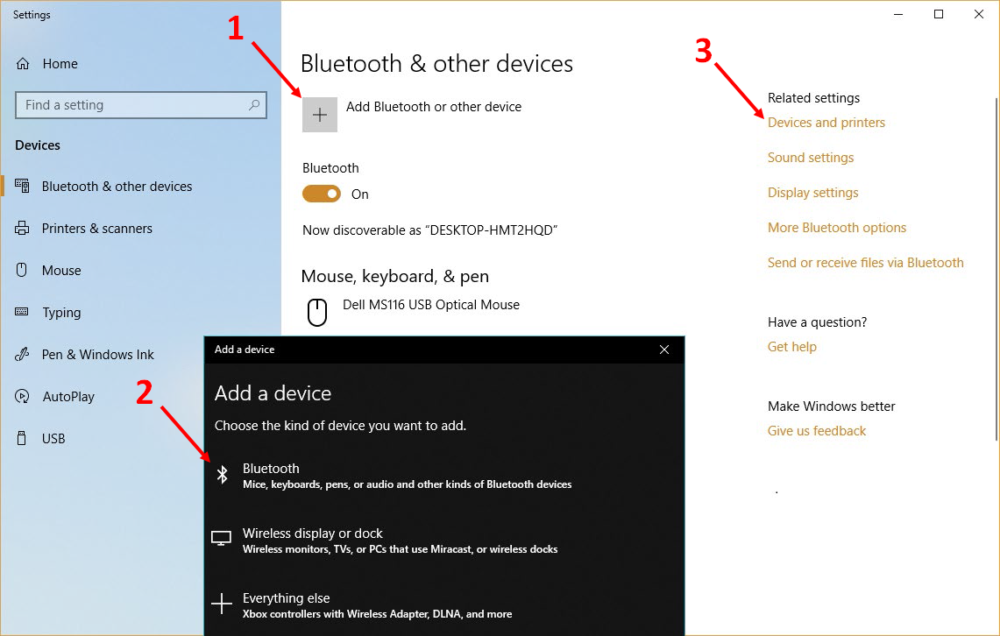
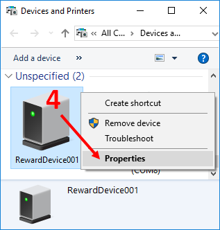
In the Properties window, click on either "hardware" or "Services" tab. There should now be a serial port ("COM") created for this Bluetooth connection. Memorize its number ("COM5" in the two figures below).
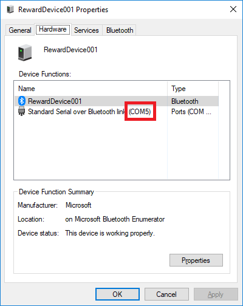 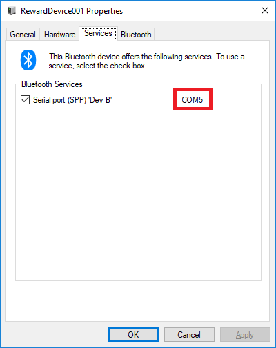
If there is no COM port here, remove the device in the "Bluetooth & other devices" window, restart the HC-05 module and start over from Step 1.
Once the pairing is complete, start NIMH ML in MATLAB and open the "Other device settings" menu. In the "Reward via Bluetooth" menu, choose the COM port of the HC-05. Click the […] button on the right and change the "Baud rate" to 38400 in the resulting window. Do not change any other option.
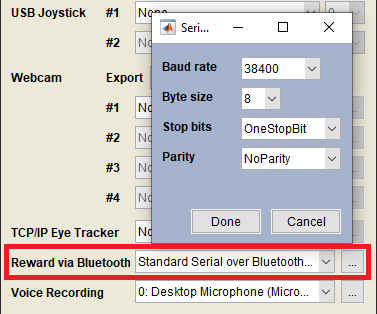
Close the "Other device settings" window and click the "Test" button in "Reward polarity" on the main menu. The Arduino circuit will produce TTL pulses according to the options given to goodmonkey(). The LED will blink shortly twice every 2 seconds at this point, if the test is successful.
The TTL pulses can be used to drive multiple reward devices. In the "03_Setup" sketch, pin 2-12 of Arduino is assigned to JuiceLine 1-11, respectively.
The link between the HC-05 module and the ML PC will be disconnected when a task is finished but will reconnect automatically next time the COM port is used. Sometimes an 1168 error may occur when the connection is re-established. Then just try again.
If the COM port is assigned correctly, but did not produce TTL output from the Arduino, check to see if RX and TX wires are on pins 0 and 1, respectively.
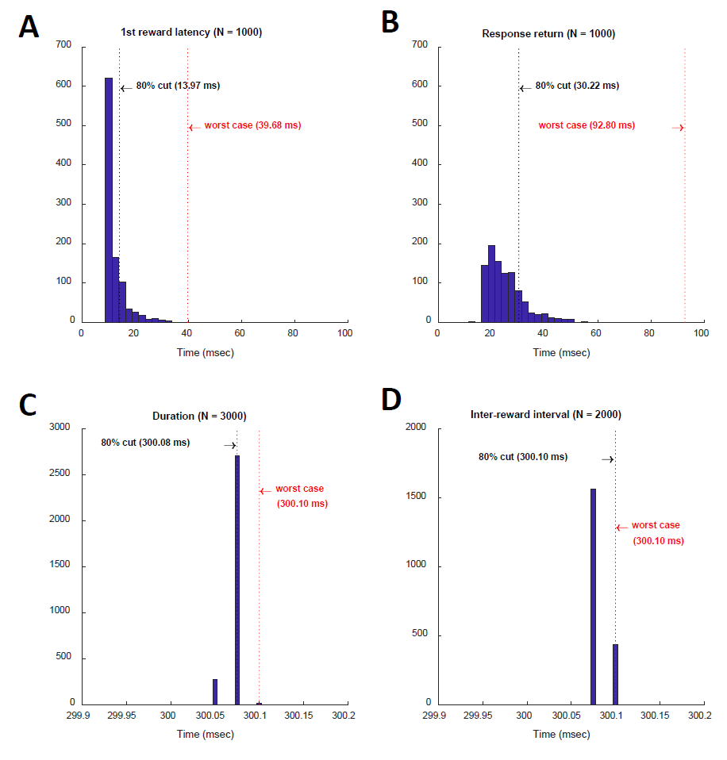
The above plots show benchmark performance of the Bluetooth connection. For benchmarking, a command to trigger a 300-ms reward 3 times at 300-ms intervals was repeated 1000 times from MATLAB. Event markers were sent before and after the command, and their timing was compared with the times of the resulting TTL pulses. All signals were recorded at 40 kHz. The latency from the command issuance to the 1st reward was 12.50 ± 4.05 ms (mean ± SD, Panel A). The time from the end of the 3rd reward to the "OK" response was 25.61 ± 8.18 ms (Panel B). The actual pulse duration was 300.07 ± 0.01 ms (Panel C) and the interval between pulses was 300.08 ± 0.01 ms (Panel D). Performance was tested with a nearby device, but may vary depending on the quality of signal reception.
The National Institute of Mental Health (NIMH) is part of the National Institutes of Health (NIH), a component of the U.S. Department of Health and Human Services.